STEP 1 · 여기서 시작
1:1 코어진단세션
- 출산·운동 히스토리 확인
- 전신 사진으로 체형 변화 확인
- 호흡·복압 패턴 함께 해 보기
- 운동 시작 시점과 방향 제안
- 1:1 질의응답
체중은 돌아왔는데 배만 그대로라면, 의지가 아니라 몸의 구조가 바뀐 거예요. 집에서 1:1 줌 코칭으로 코어의 기능부터 되찾아요.
미국·영국·독일·호주에 사는 엄마들도 함께하고 있어요.
복직근이개는 임신 중 배가 커지면서 좌우 복직근을 잇는 백선(흰선)이 늘어나, 두 근육 사이가 벌어진 상태예요. 찢어진 게 아니라 늘어난 거예요.
출산 후에도 백선이 장력을 되찾지 못하면, 배에 힘을 줘도 힘이 가운데로 새어 나가요. 그래서 살이 빠져도 아랫배가 나와 있고, 허리·골반 통증이 생기기도 해요.
벌어진 간격보다 중요한 건 배가 힘을 받아 주는지예요. 코어는 압력 상자예요. 숨(천장)·골반저근(바닥)·복벽(둘레)이 함께 일해야 해요.
"6개월 골든타임을 놓치면 평생 못 닫힌다"는 말은 사실이 아니에요. 출산 후 몇 년이 지나도 회복할 수 있어요. 다만 저절로 닫히지 않을 뿐이에요.
좋은 운동·나쁜 운동은 없어요. 지금의 내 몸에 맞는지가 있을 뿐이에요.
팔·다리는 돌아왔는데 배만 아직 임신한 것처럼 나와 있어요.
열심히 했는데 배에 힘이 들어가는 느낌이 없었어요.
아이를 안고, 들고, 재우는 일상이 몸에 쌓이고 있어요.
7개 질문에 답하면 지금 내 코어 상태를 확인할 수 있어요. 결과 리포트는 연락처로 보내 드려요.
새는 느낌·빠지는 느낌이 있다면 운동보다 병원(산부인과·비뇨의학과) 확인이 먼저예요. 확인 후 함께 운동을 설계해요.
8주 프로그램은 1:1 코어진단세션을 받은 분께 안내해요. 진단세션은 운동 수업이 아니라 상담이고, 등록 의무가 없어요.
지금 몸 상태를 확인하고 나에게 맞는 회복 순서를 설계해요.
숨·속근육·복압이 다시 반응하도록 감각을 깨워요.
아기 안기·들기 같은 일상 동작과 강한 움직임으로 넓혀요.
혼자서도 스스로 조절할 수 있게 마무리해요.
8주 안에 모든 복직근이개가 0cm가 되지는 않아요. 목표는 숫자 0이 아니라 스스로 조절하는 힘이에요.
모든 사진은 보정·가공이 없으며, 본인에게 이용 동의를 받아 게재했어요. 불법 유포를 금합니다.
옆으로 넘겨 보세요 →


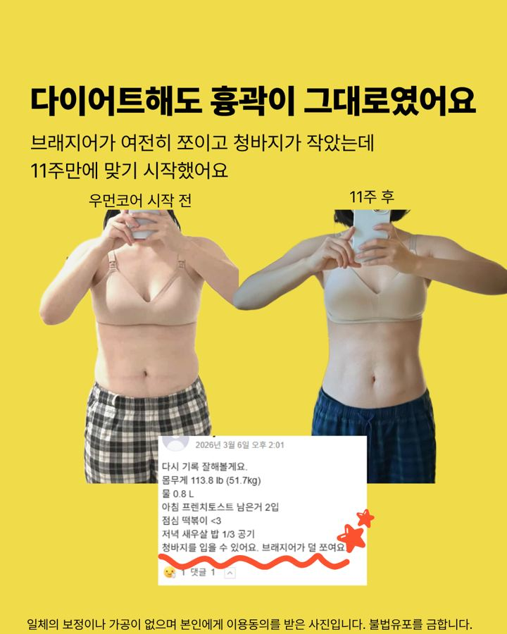
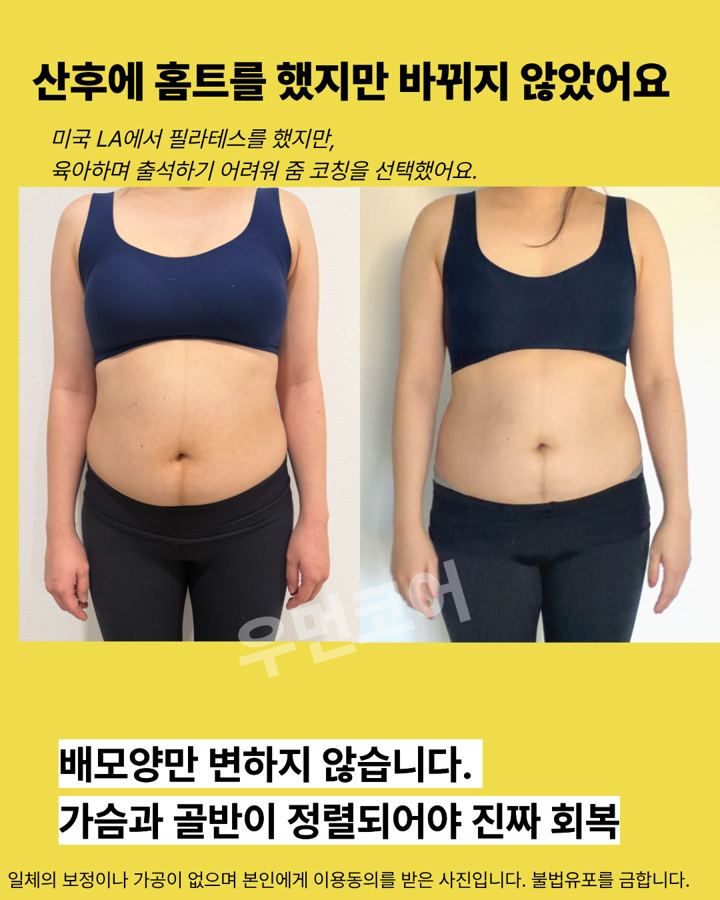
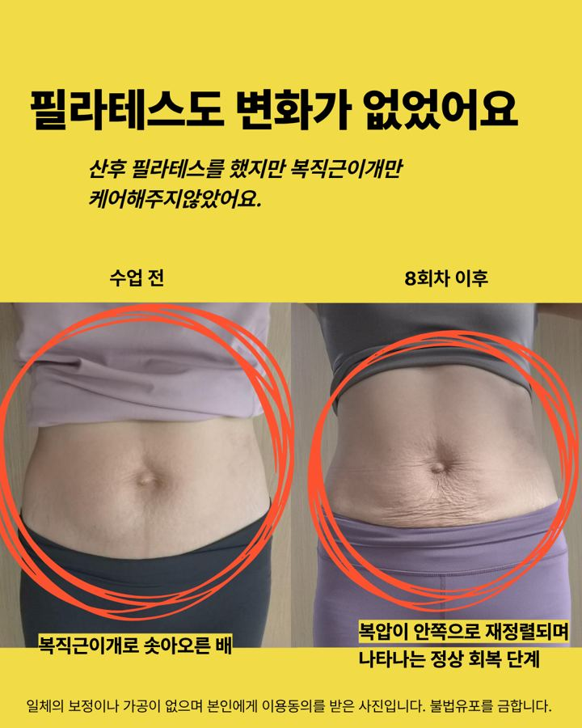
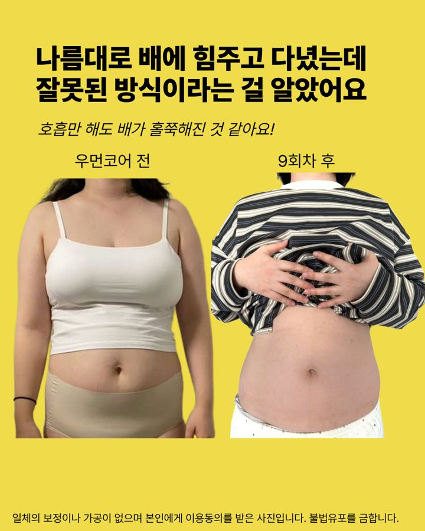
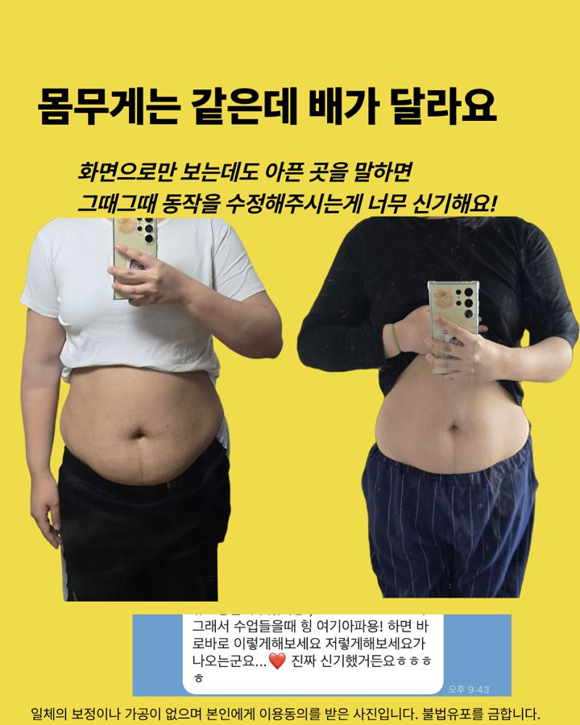


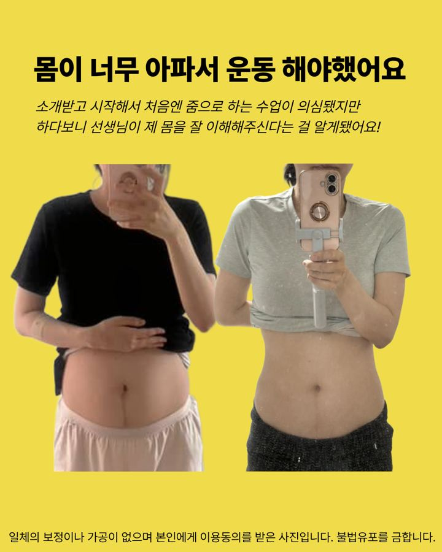

"지금까지 내가 배에 힘을 잘못 쓰고 있었구나."— 9회차 수강생
"일 년 넘게 혼자 영상 보고 했는데 손가락 두 개에서 더 닫히지 않았어요. 몇 번 수업 만에 한 개로."— 뉴욕 쌍둥이 엄마 수강생
"기능에 집중해서 믿음이 갔어요."— 수강생 인터뷰

출산 후 모유수유를 하며 살이 빠져 회복된 줄 알았어요. 아이가 5살 무렵 77kg까지 늘었고, 다이어트를 하고 필라테스 강사를 시작하면서 아이가 만 6살 때 제 몸의 복직근이개를 처음 알게 됐어요.
무거운 스쿼트를 하던 거울 앞에서 배 가운데가 솟는 걸 보고서야 깨달았어요. 필요한 건 더 무거운 무게가 아니라 올바른 순서였어요. 스스로 회복한 뒤, 트레이너로 50~60대 회원들의 허리·무릎 통증 뒤에서도 복직근이개를 만나며 "더 빨리 만나야 한다"고 생각해 womencore를 시작했어요.
무료 교육과 기관 특강으로 "6개월 골든타임" 같은 오해를 바로잡고 있어요.
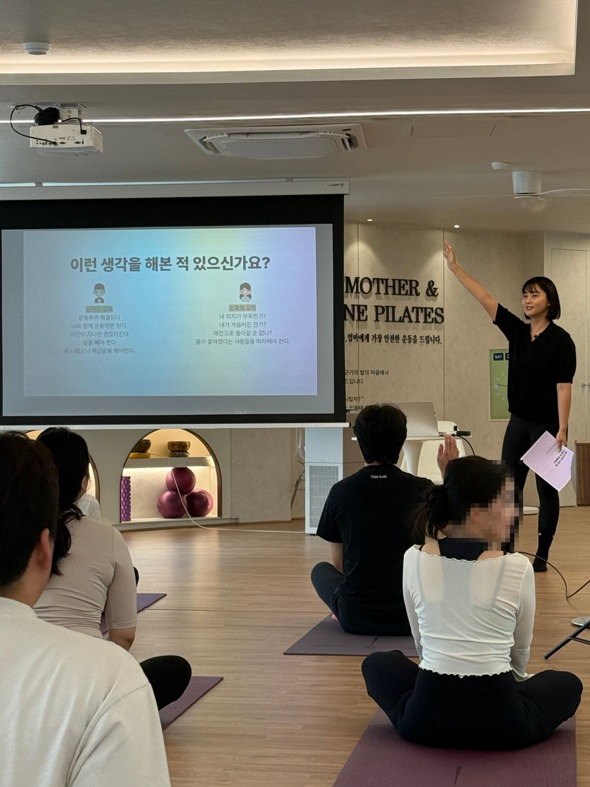
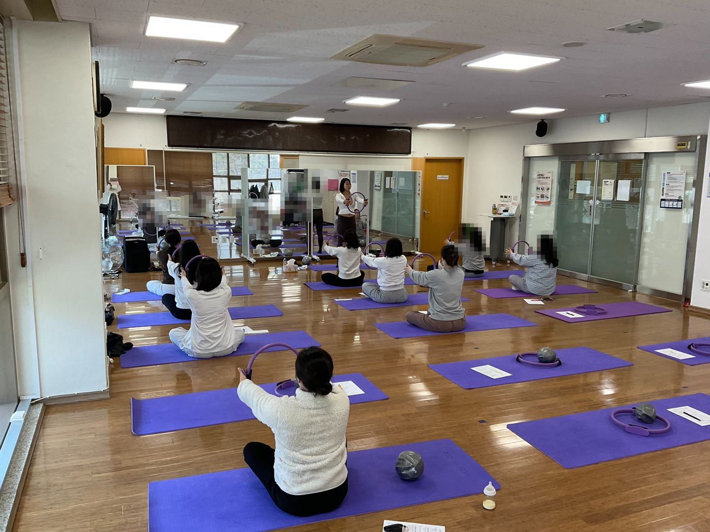
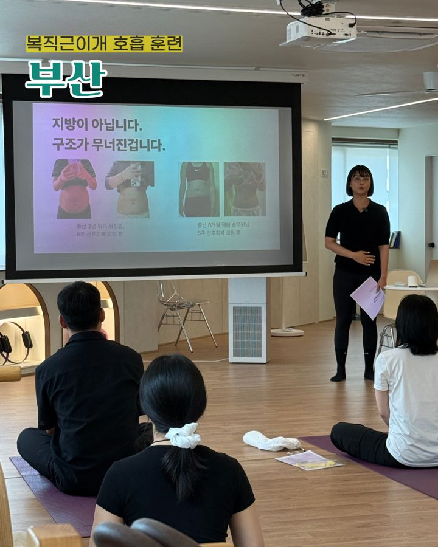
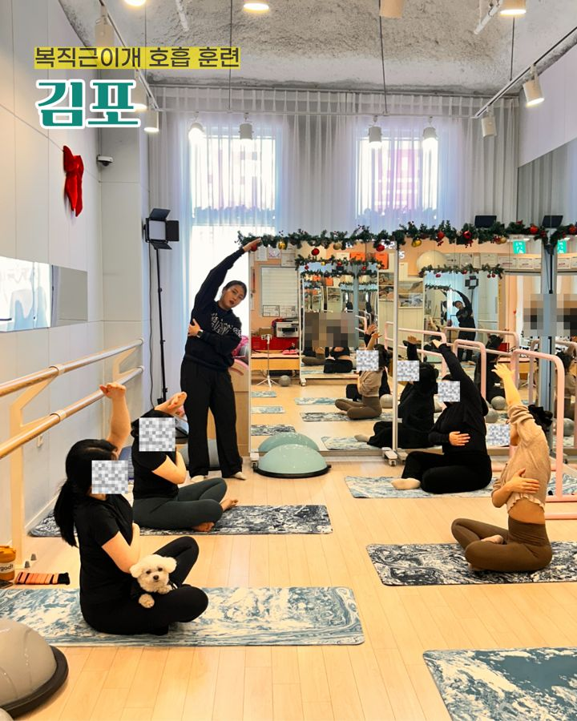
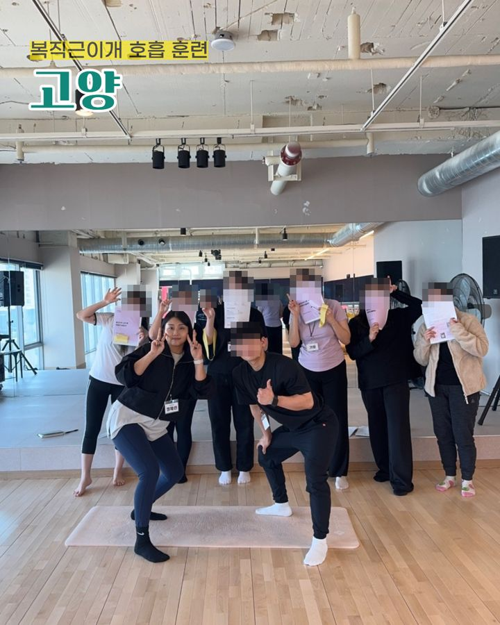
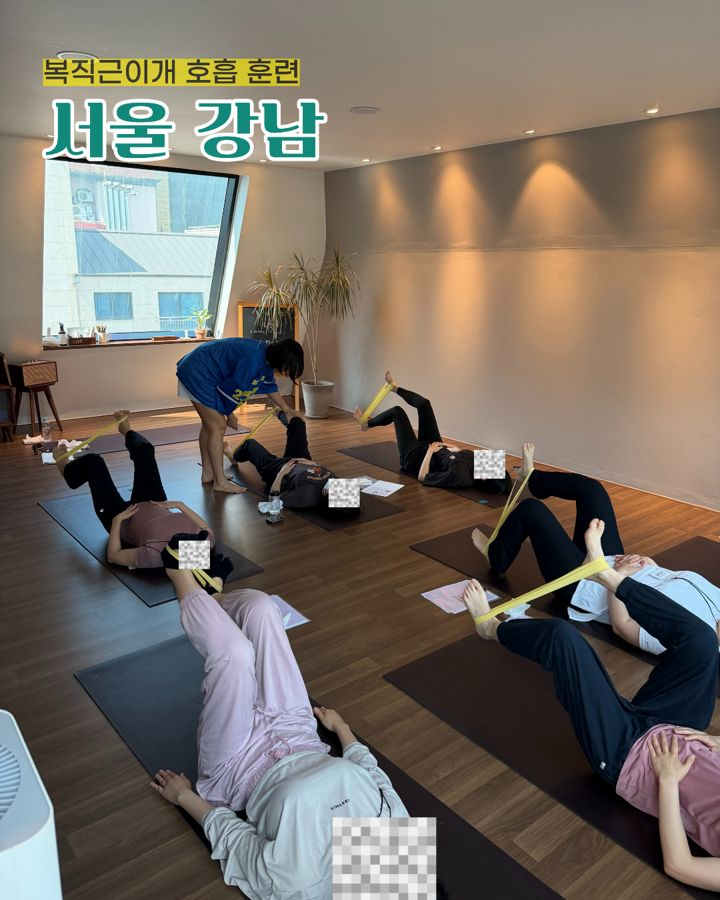
기관 강의·협업 문의는 카카오톡 채널로 받고 있어요.
수강생 대부분이 처음엔 같은 걱정을 했어요. 화면으로 자세와 호흡을 보며 그때그때 동작을 고쳐 드리고, 운동일지와 영상으로 수업 밖에서도 피드백해요.
출산 직후에는 호흡과 가벼운 움직임부터 시작해요. 1:1 코칭은 출산 6주 이후를 권해요.
회복에 늦은 때는 없어요. 다만 복직근이개는 저절로 닫히지 않을 뿐이에요.
살보다 복벽·갈비뼈·골반의 구조가 바뀐 경우가 많아요. 출산 후 나온 배, 엄마의 잘못이 아니에요.
운동의 양보다 순서가 문제일 수 있어요. 숨 → 정렬 → 속근육 → 움직임 → 힘 순서로 다시 쌓아요.
8주 안에 모든 복직근이개가 0cm가 되지는 않아요. 목표는 숫자 0이 아니라 스스로 조절하는 힘이에요.
금지할 운동은 없고, 지금 내 몸에 맞는 단계가 있어요. 준비가 되면 바르게 해요.
아니에요. 체형 변화를 확인하고 운동 방향을 안내하는 45분 Zoom 상담이고, 프로그램 등록 의무는 없어요.
미국·영국·독일·호주에서도 참여하고 있어요. 보통 한국 시간 오전(미국은 저녁)에 진행하고, 시간은 조율할 수 있어요.
새거나, 빠지는 느낌이 있거나, 덩어리가 만져지면 운동보다 병원 확인이 먼저예요. 확인 후 함께 운동을 설계해요.
인스타그램·유튜브에 복직근이개와 산후 회복 이야기를 꾸준히 올리고 있어요.